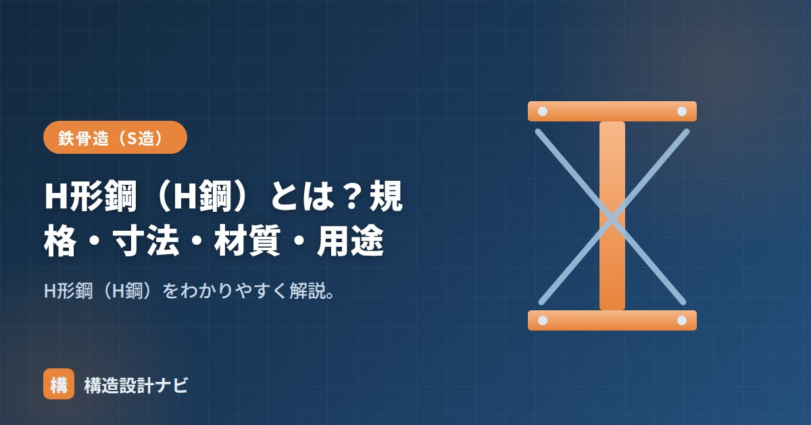

H形鋼（H鋼）とは？規格・寸法・材質・用途

H形鋼（エイチがたこう、H鋼）とは、断面が「H」の形をした形鋼のことです。鉄骨造（S造）の柱・梁の主役であり、鋼材の中でも最も広く使われる部材です。同じ重さの鋼材でも形状によって曲げに対する強さは大きく変わりますが、H形鋼は上下のフランジに材料を集中させた効率の良い断面形状のため、軽い自重で大きな荷重を支えられます。
- H形鋼はフランジとウェブからなる、曲げに効率よく抵抗する形鋼
- 規格はJIS G 3192。細幅・中幅・広幅の3系列がある
- 材質はSS400・SN材など。梁は細幅、柱は広幅が基本
H形鋼の構成
H形鋼は、上下の水平な板＝フランジと、それをつなぐ垂直な板＝ウェブからなります。材料を上下のフランジに集めることで、少ない重さで大きな断面係数・断面二次モーメントを得られ、曲げに効率よく抵抗します。同じ断面積の四角い棒（無垢の断面）と比べると、H形鋼のほうがはるかに大きな曲げ耐力を発揮でき、これが鉄骨造で圧倒的なシェアを占める理由です。
規格
建築用のH形鋼はJIS G 3192（熱間圧延形鋼）で形状・寸法・質量・許容差が定められています。寸法は「H-せい×幅×ウェブ厚×フランジ厚」で表します。工場で高温の鋼片を圧延して成形する「熱間圧延」でつくられるため、複雑な断面形状でも一体で製造でき、溶接による組立（ビルドH鋼）よりも経済的に量産できます。
寸法シリーズ（細幅・中幅・広幅）
H形鋼は、せい（高さ）と幅の比率で3系列に分かれます（詳細は広幅・中幅・細幅）。
| 系列 | せい:幅の傾向 | 主な用途 |
|---|---|---|
| 細幅 | せい≫幅（約2:1） | 梁 |
| 中幅 | 中間（約1.5:1） | 梁・柱 |
| 広幅 | せい≒幅（約1:1） | 柱 |
細幅は強軸方向の断面性能に特化しているため、一方向からの曲げに強い梁に向きます。一方で広幅はせいと幅がほぼ同じであるため、2方向からの曲げをバランスよく受けられ、柱に適しています。
材質
H形鋼の材質には、汎用のSS400や、建築用で耐震性に配慮したSN400B・SN490B/C、溶接性重視のSM材などが使われます。主要部材ではSN材が主流です。SN材は、降伏比の上限や板厚方向の性能など、地震時の粘り強さ（塑性変形能力）を確保するための規定が加えられている点がSS材との大きな違いです。
用途
- 梁：細幅・中幅のH形鋼を、せいを縦にして使う。
- 柱：広幅のH形鋼や角形鋼管を使う。
- そのほかブレース・母屋・間柱など幅広く使われる。
よくある質問
Q1. H形鋼とI形鋼はどう違いますか？
どちらもフランジとウェブからなる似た断面ですが、I形鋼はフランジ内側にテーパー（勾配）が付いた古い規格で、現在の建築ではフランジが平行なH形鋼が主流です。フランジ内面が平行なH形鋼のほうが接合金物との納まりがよく、施工性に優れます。
Q2. なぜ柱には広幅、梁には細幅が使われるのですか？
梁は多くの場合、上下方向の一方向だけから曲げを受けるため、強軸方向に性能を集中させた細幅が経済的です。一方、柱は地震力や風圧力によってあらゆる方向から力を受けるため、弱軸方向の性能も確保できる広幅（またはさらに均等な角形鋼管）が選ばれます。
表記は「H形鋼の読み方」、性能値は「断面性能・単位重量一覧」、系列は「広幅・中幅・細幅」をどうぞ。
発注書を確認するとき欠かさず見るのは、材質欄がSS400のままになっていないかという点です。主要な柱・梁にはSN材を指定するのが基本ですが、汎用品と混同した記載がそのまま流れてしまう場面を何度か見てきました。
H形鋼はどうつくられるか（図解）
ビルドH（溶接組立H形鋼）との違い
| 圧延H形鋼（ロールH） | ビルドH（溶接組立） | |
|---|---|---|
| 製法 | 熱間圧延による一体成形 | 鋼板を切り出して溶接で組み立てる |
| 寸法の自由度 | JIS規格のサイズに限られる | 自由に設定できる |
| コスト | 安い（大量生産品） | 高い（製作手間がかかる） |
| 納期 | 短い（在庫があることが多い） | 長い（製作が必要） |
| 品質 | 安定（溶接部がない） | 溶接部の品質管理が必要 |
| 使いどころ | 一般的な柱・梁 | 規格外の大断面、テーパー梁、特殊形状 |
設計では、できるだけJIS規格のH形鋼で成立させるのが基本です。コスト・納期・品質のいずれでも有利だからです。ビルドHを使うのは、規格品ではせいが足りない大スパン、部位ごとに断面を変えたいテーパー梁など、規格品では対応できない場合に限られます。安易にビルドHを指定すると、コストと工期に大きく影響します。
まとめ
- H形鋼は断面がHの形鋼。鉄骨の柱・梁の主役。
- 規格はJIS G 3192。細幅・中幅・広幅の系列がある。
- 材質はSS400・SN材など。梁は細幅、柱は広幅が基本。
- SN材は地震時の粘り強さを確保する規定が加わった建築用の材質。